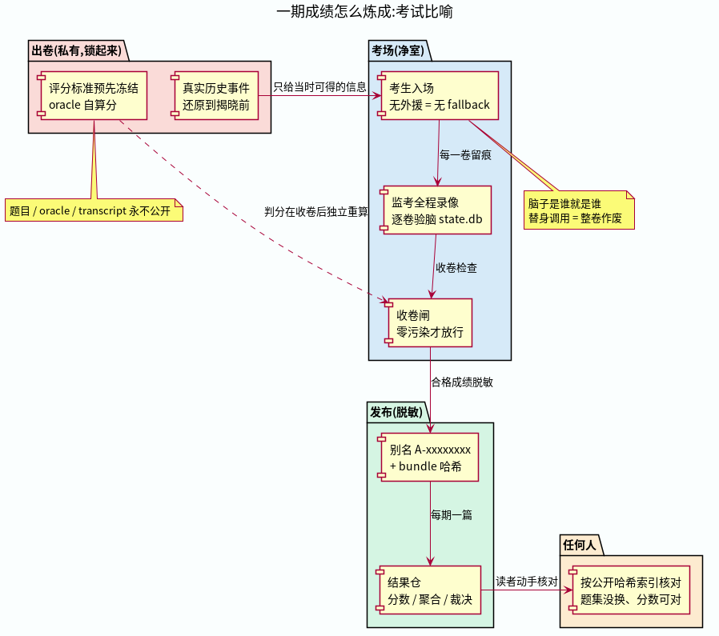
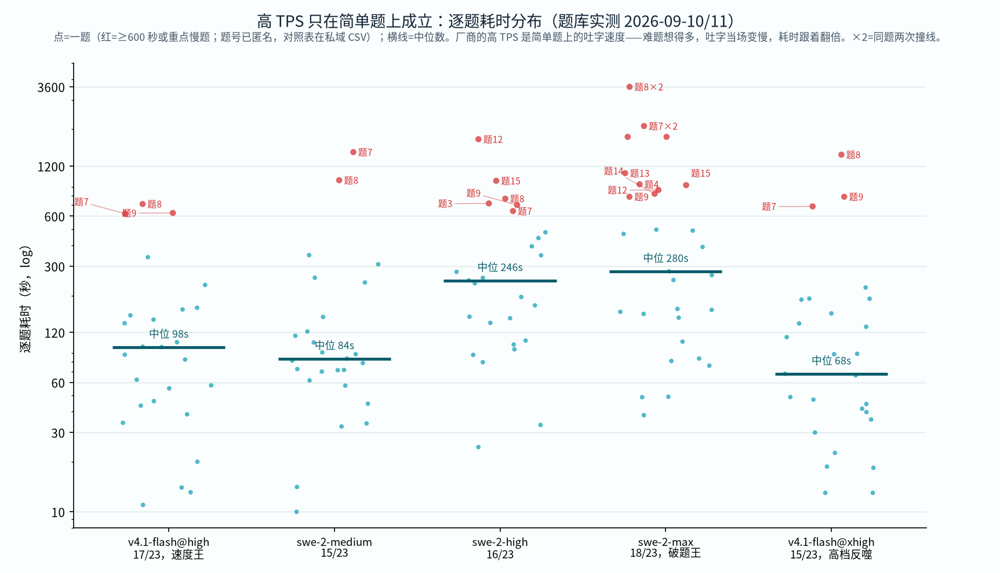

把真实、可审计的历史事件封进琥珀，精确还原到「答案揭晓之前」，让 AI 只用当时可得的信息重做一遍。评分标准在看到任何输出之前就已冻结。题目永不公开，分数永远可查。
同档（high）、同 23 案、同公开哈希索引。五个名次档，并列如实标注。点图看明细仓。小词典：案 = 一道题（来自一件真事）；卷 = 一次作答；档 = 推理力度档位。
九轴完成度矩阵：每格 = 该面全部案子的钉级完成度。同分的几家，形状完全不同——总分看不见的东西，矩阵看得见。
每期成绩像一场考试：出卷封存、净室应考、逐卷验脑、脱敏发布、人人可核对。

都有边界，都只代表已测家族——原文里每条都标着反例。

每条车道（模型 × 端点 × 档位）一个仓，每期一篇矩阵，验脑记录与哈希对照齐全。
方法规范 + 公开哈希索引 + 跨仓周榜
amber-devin18/23swe-2-max @ Devin — 当前榜首
amber-kimi17/23k3 @ Kimi 官方 coding 端点 + K2.8 对决
amber-ollama17/23glm-5.3-flash / d41f @ Ollama Cloud
amber-commandcode17/23d41f @ CommandCode — 五档天梯
amber-workbuddy17/23hy4-preview-f @ WorkBuddy ACP
amber-gpt16/23gpt-6-astra / gpt-5.6 系 @ OpenAI Codex
amber-crof16/23qwen3.8-27b @ CrofAI — $1.15 性价比之王
amber-deepseek16/23deepseek-flash @ DeepSeek 官方
amber-opencode16/23deepseek-flash @ OpenCode Go
amber-doubao16/23doubao-seed-evolving @ 火山方舟 Agent Plan
amber-goldenpotato14/23Qwen3.8-27B @ 社区自部署（3×V100）
方法全文：AMBER Core Specification · 公开哈希索引 · 路线图